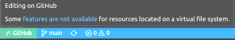
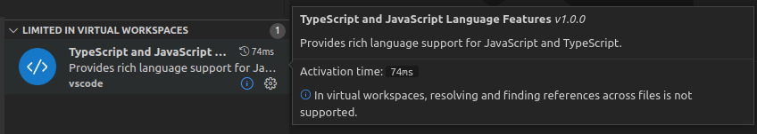

Virtual Workspaces
Extensions like the GitHub Repositories extension open VS Code on one or more folders backed by a file system provider. When an extension implements a file system provider, workspace resources may not be located on the local disk, but be virtual, located on a server or the cloud, and editing operations happen there.
This configuration is called a virtual workspace. When a virtual workspace is open in a VS Code window, this is indicated by a label in the remote indicator in the lower left corner, similar to other remote development windows.

Not all extensions are able to work with virtual resources and may require resources to be on disk. Some extensions use tools that rely on disk access, need synchronous file access, or don't have the necessary file system abstractions. In these cases, when in a virtual workspace, VS Code indicates to the user that they are running in a restricted mode and that some extensions are deactivated or work with limited functionality.
In general, users want as many extensions as possible to work in virtual workspaces and to have a good user experience when browsing and editing remote resources. This guide shows how extensions can test against virtual workspaces, describes modifications to allow them to work in virtual workspaces, and introduces the virtualWorkspaces capability property.
Modifying an extension to work with virtual workspaces is also an important step for working well in VS Code for the Web. VS Code for the Web runs entirely inside a browser and workspaces are virtual due to the browser sandbox. See the Web Extensions guide for more details.
Is my extension affected?
When an extension has no executable code but is purely declarative like themes, keybindings, snippets, or grammar extensions, it can run in a virtual workspace and no modification is necessary.
Extensions with code, meaning extensions that define a main entry point, require inspection and, possibly, modification.
Run your extension against a virtual workspace
Install the GitHub Repositories extension and run the Open GitHub Repository... command from the Command Palette. The command shows a Quick Pick dropdown and you can paste in any GitHub URL, or choose to search for a specific repository or pull request.
This opens a VS Code window for a virtual workspace where all resources are virtual.
Review that the extension code is ready for virtual resources
The VS Code API support for virtual file systems has been around for quite a while. You can check out the file system provider API.
A file system provider is registered for a new URI scheme (for example, vscode-vfs) and resources on that file system will be represented by URIs using that schema (vscode-vfs://github/microsoft/vscode/package.json)
Check how your extension deals with URIs returned from the VS Code APIs:
- Never assume that the URI scheme is
file.URI.fsPathcan only be used when the URI scheme isfile. - Look out for usages of the
fsnode module for file system operations. If possible, use thevscode.workspace.fsAPI, which delegates to the appropriate file system provider. - Check for third-party components that depend on a
fsaccess (for example, a language server or a node module). - If you run executables and tasks from commands, check whether these commands make sense in a virtual workspace window or whether they should be disabled.
Signal whether your extension can handle virtual workspaces
The virtualWorkspaces property under capabilities in package.json is used to signal whether an extension works with virtual workspaces.
No support for virtual workspaces
The example below declares that an extension does not support virtual workspaces and should not be enabled by VS Code in this setup.
{
"capabilities": {
"virtualWorkspaces": {
"supported": false,
"description": "Debugging is not possible in virtual workspaces."
}
}
}
Partial and full support for virtual workspaces
When an extension works or partially works with virtual workspaces, it should define "virtualWorkspaces": true.
{
"capabilities": {
"virtualWorkspaces": true
}
}
If an extension works, but has limited functionality, it should explain the limitation to the user:
{
"capabilities": {
"virtualWorkspaces": {
"supported": "limited",
"description": "In virtual workspaces, resolving and finding references across files is not supported."
}
}
}
The description is shown in the Extensions view:

The extension should then disable the features that are not supported in a virtual workspace as described below.
Default
"virtualWorkspaces": true is the default for all extensions that have no yet filled in the virtualWorkspaces capability.
However, while testing virtual workspaces, we came up list of extensions that we think should be disabled in virtual workspaces.
The list can be found in issue #122836. These extensions have "virtualWorkspaces": false as default.
Of course, extension authors are in a better position to make this decision. The virtualWorkspaces capability in an extension's package.json will override our default and we will eventually retire our list.
Disable functionality when a virtual workspace is opened
Disable commands and view contributions
The availability of commands and views and many other contributions can be controlled through context keys in when clauses.
The virtualWorkspace context key is set when all workspace folders are located on virtual file systems. The example below only shows the command npm.publish in the Command Palette when not in a virtual workspace:
{
"menus": {
"commandPalette": [
{
"command": "npm.publish",
"when": "!virtualWorkspace"
}
]
}
}
The resourceScheme context key is set to the URI scheme of the currently selected element in the File Explorer or the element open in the editor.
In the example below, the npm.runSelectedScript command is only displayed in the editor context menu if the underlying resource is on the local disk.
{
"menus": {
"editor/context": [
{
"command": "npm.runSelectedScript",
"when": "resourceFilename == 'package.json' && resourceScheme == file"
}
]
}
}
Detect virtual workspaces programmatically
To check whether the current workspace consists of non-file schemes and is virtual, you can use the following source code:
const isVirtualWorkspace =
workspace.workspaceFolders &&
workspace.workspaceFolders.every(f => f.uri.scheme !== 'file');
Language extensions and virtual workspaces
What are the expectations for language support with virtual workspaces?
It's not realistic that all extensions be able to fully work with virtual resources. Many extensions use external tools that require synchronous file access and files on disk. It's therefore fine to only provide limited functionality, such as the Basic and the Single-file support as listed below.
A. Basic language support:
- TextMate tokenization and colorization
- Language-specific editing support: bracket pairs, comments, on enter rules, folding markers
- Code snippets
B. Single-file language support:
- Document symbols (outline), folding, selection ranges
- Document highlights, semantic highlighting, document colors
- Completions, hovers, signature help, find references/declarations based on symbols on the current file and on static language libraries
- Formatting, linked editing
- Syntax validation and same-file semantic validation and Code Actions
C. Cross-file, workspace-aware language support:
- References across files
- Workspace symbols
- Validation of all files in the workspace/project
The rich language extensions that ship with VS Code (TypeScript, JSON, CSS, HTML, Markdown) are limited to single-file language support when working on virtual resources.
Disabling a language extension
If working on a single file is not option, language extensions can also decide to disable the extension when in a virtual workspace.
If your extension provides both grammars and rich language support that needs to be disabled, the grammars will also be disabled. To avoid this, you can create a basic language extension (grammars, language configuration, snippets) separate from the rich language support and have two extensions.
- The basic language extension has
"virtualWorkspaces": trueand provides the language ID, configuration, grammar, and snippets. - The rich language extension has
"virtualWorkspaces": falseand contains themainfile. It contributes language support, commands, and has an extension dependency (extensionDependencies) on the basic language extension. The rich language extension should keep the extension ID of the established extension, so the user can continue to have the full functionality by installing a single extension.
You can see this approach with the built-in language extensions, such as JSON, which consists of a JSON extension and a JSON language feature extension.
This separation also helps with Untrusted Workspaces running in Restricted Mode. Rich language extensions often require trust while basic language features can run in any setup.
Language selectors
When registering a provider for a language feature (for example, completions, hovers, Code Actions, etc.) make sure to specify the schemes the provider supports:
return vscode.languages.registerCompletionItemProvider(
{ language: 'typescript', scheme: 'file' },
{
provideCompletionItems(document, position, token) {
// ...
}
}
);
What about support in the Language Server Protocol (LSP) for accessing virtual resources?
Work is under way that will add file system provider support to LSP. Tracked in Language Server Protocol issue #1264.